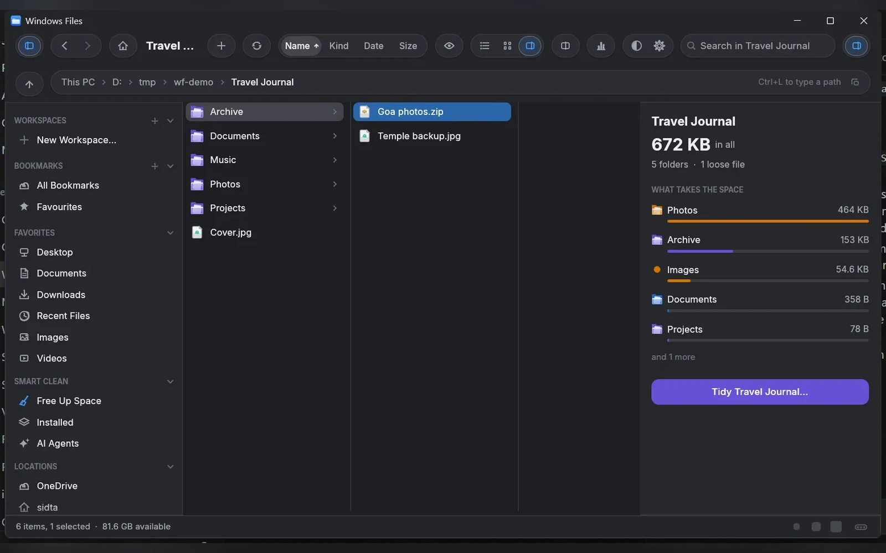
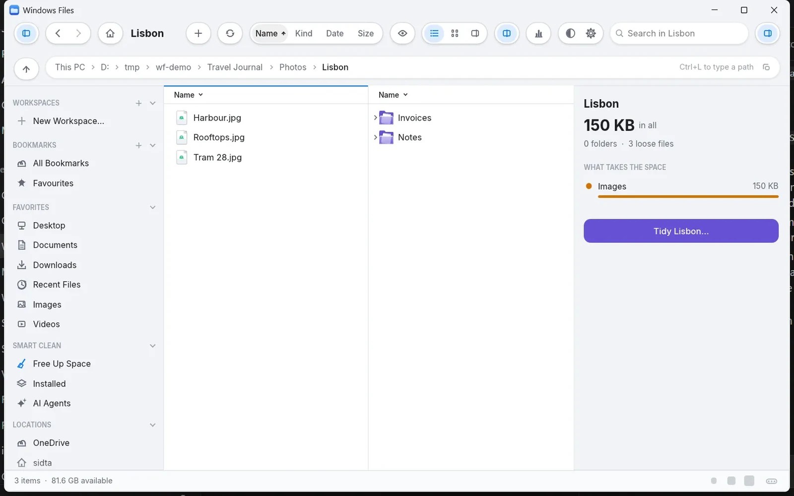
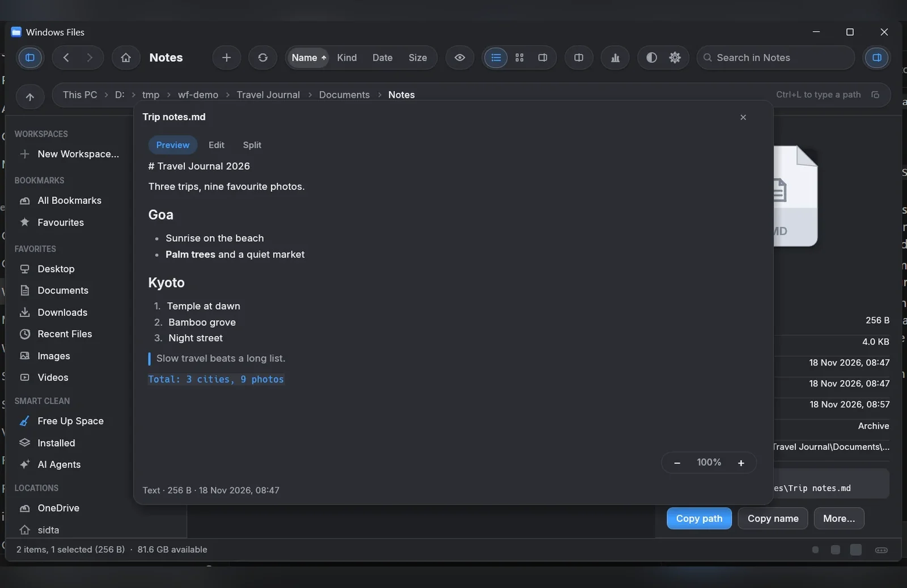
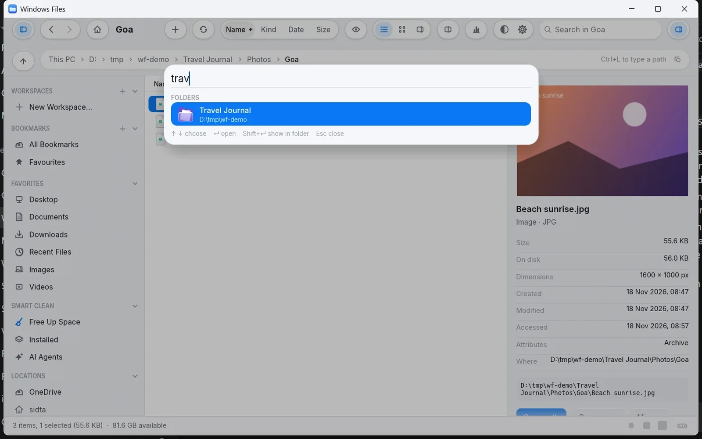
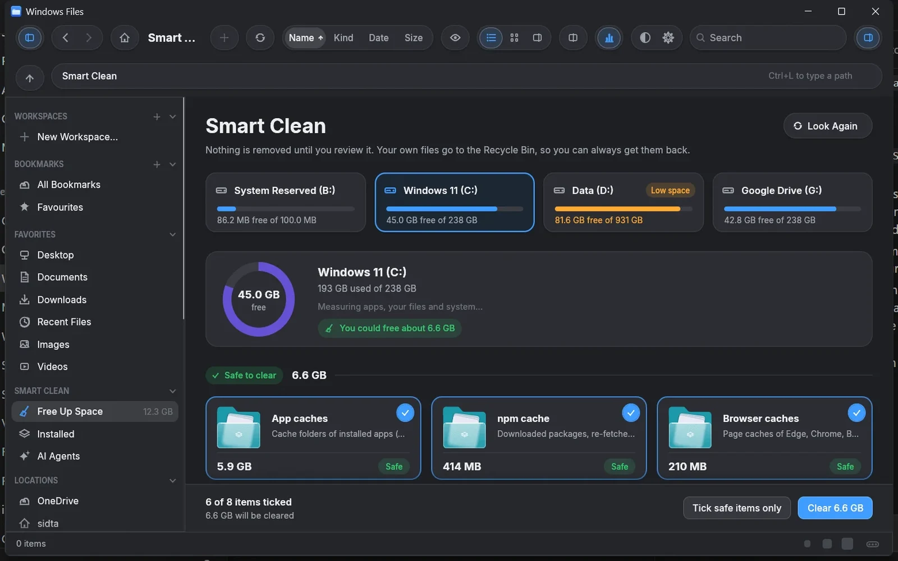

NewSee what's new in Windows Files›
A fast, light file manager with a pill toolbar, Quick Look, column view, split panes and Smart Clean. Installs for your account with no admin rights.
Windows 10 and 11, 64-bit · Installs for your user, no admin rights

Pill toolbar, tree in the list and a preview pane. Press Space for Quick Look.

Every folder you pick opens in a new column. Ctrl+3, like Finder.

Split the window into up to six panes. Copy and move between them with F5 and F6.

Preview images, video, PDFs, Office files and Markdown. Edit Markdown right in place.

Press Ctrl+K and type to jump to any folder, file or command. Enter opens it.

Find what is eating your disk. Nothing is removed until you review it.